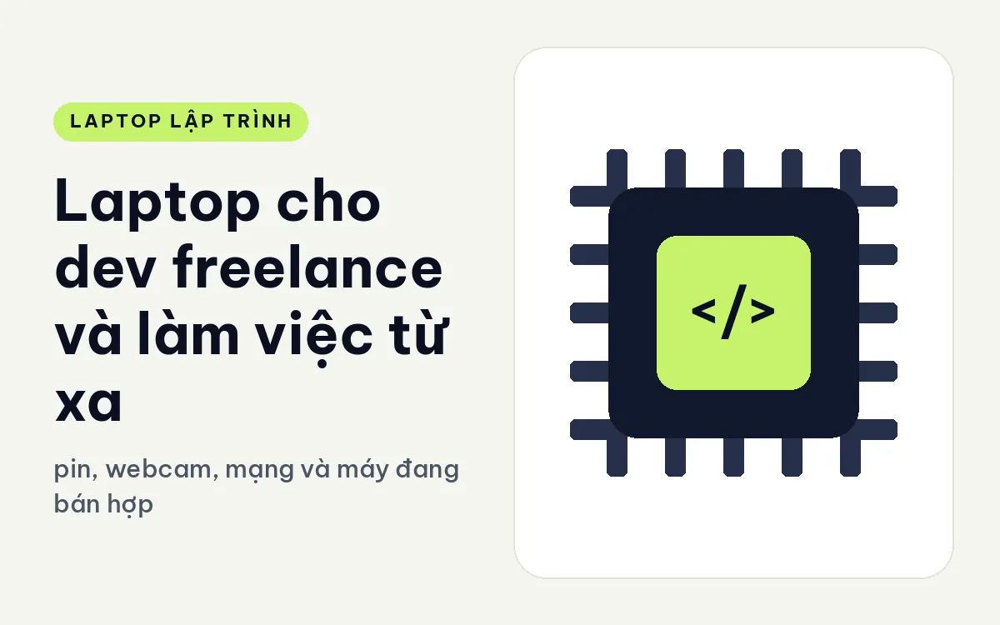
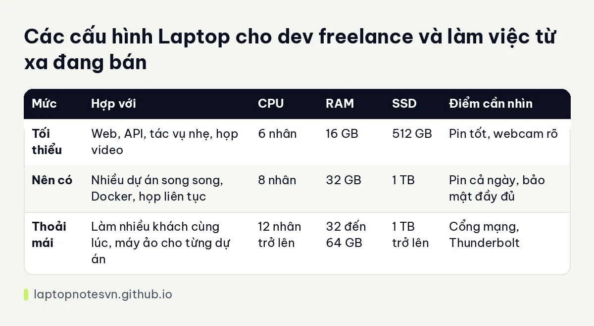

Laptop cho dev freelance và làm việc từ xa - pin, webcam, mạng và máy đang bán hợp

Dev freelance và dev làm từ xa dùng laptop khác hẳn người làm văn phòng cố định. Cái máy là văn phòng, là phòng họp, là nơi giữ mã nguồn của khách hàng. Nó phải mở lên là chạy, họp video suốt ngày không giật, mang đi quán cà phê hay đi công tác không sợ hết pin, và quan trọng nhất là không được mất dữ liệu của người khác giao cho bạn.
Bài này nói về những điều cần xét khi chọn máy cho kiểu công việc ấy: pin, âm thanh hình ảnh khi họp, kết nối, bảo mật, rồi hai máy đang bán hợp. Các mức bên dưới là kinh nghiệm tư vấn chung.
Làm từ xa đòi hỏi gì ở laptop
Pin đứng đầu. Làm freelance nghĩa là bạn không phải lúc nào cũng ngồi cạnh ổ điện. Pin dùng thực tế cả buổi, kèm chế độ sạc nhanh, giúp bạn yên tâm khi đi gặp khách. Điện của quán cà phê không phải lúc nào cũng gần.
Họp video là phần thứ hai. Bạn có thể họp với khách ba bốn lần mỗi ngày, nên webcam rõ, micrô lọc ồn tốt và loa dễ nghe sẽ khiến bạn trông chuyên nghiệp hơn. Điều này không quyết định chất lượng code, nhưng ảnh hưởng thực sự đến cách khách hàng nhìn bạn.
Thứ ba là kết nối. Wi-Fi hiện đại ổn định, cổng USB-C xuất hình ra màn hình rời, và tốt nhất là có thêm cổng mạng có dây hoặc dùng được bộ đổi. Mạng chập chờn giữa buổi họp là thứ làm hỏng cả cuộc hẹn quan trọng.
Cuối cùng là bảo mật. Mã nguồn của khách hàng cần được bảo vệ: mã hóa ổ đĩa, khóa bằng vân tay hoặc nhận diện khuôn mặt, có chip bảo mật TPM. Khách chuyên nghiệp thường hỏi bạn xử lý dữ liệu của họ ra sao, và một máy có chuẩn bảo mật rõ ràng giúp bạn trả lời tự tin.
Bảng cấu hình theo mức
| Mức | Hợp với | CPU | RAM | SSD | Điểm cần nhìn |
|---|---|---|---|---|---|
| Tối thiểu | Web, API, tác vụ nhẹ, họp video | 6 nhân | 16 GB | 512 GB | Pin tốt, webcam rõ |
| Nên có | Nhiều dự án song song, Docker, họp liên tục | 8 nhân | 32 GB | 1 TB | Pin cả ngày, bảo mật đầy đủ |
| Thoải mái | Làm nhiều khách cùng lúc, máy ảo cho từng dự án | 12 nhân trở lên | 32 đến 64 GB | 1 TB trở lên | Cổng mạng, Thunderbolt |
Nếu hay đi lại và pin là mối quan tâm chính, bài pin và sạc laptop dev đi làm đi vào chi tiết hơn.

Máy còn hàng hợp với dev freelance và làm việc từ xa
Cho người hay đi, Lenovo ThinkPad X1 Carbon Gen 14 | Aura Edition (2026) đáng để so sánh. Máy nặng dưới 1 kg, màn 14 inch 2.8K OLED, có ba cổng Thunderbolt 4, RAM 32GB LPDDR5X 8533. Có ba bản chip: Ultra 7 365 với 8 nhân, Ultra X7 368H với 16 nhân, và Ultra 7 356H kèm SSD 1TB. Ba cổng Thunderbolt 4 cho phép cắm màn hình rời, ổ ngoài và sạc cùng lúc, rất hợp cho bàn làm việc tạm.
Lựa chọn thực dụng hơn là Lenovo ThinkPad T14 Gen 6 (2025). Máy nặng 1,53 kg. Bản Ultra 5 235U có 16GB DDR5 5600, còn bản Ultra 7 258V và Ultra 5 228V có 32GB LPDDR5x 8533 với đồ họa Arc 140V hoặc 130V. Máy có cảm biến vân tay, Windows Hello và dTPM 2.0, nên đáp ứng tốt yêu cầu bảo mật khi làm việc với khách. Bản chip dòng V nói chung được thiết kế để tiết kiệm điện, hợp người cần pin bền.
Thói quen làm việc từ xa nên có
Dev làm một mình nên tự lập quy trình sao lưu: mã nguồn trên kho Git của khách hoặc của bạn, tài liệu quan trọng trên bộ lưu trữ đám mây được mã hóa, và ít nhất một ổ ngoài dự phòng. Mất máy giữa dự án là rủi ro có thật, nhất là khi bạn hay mang máy đi.
Nên tách tài khoản làm việc khỏi tài khoản cá nhân, mỗi khách một thư mục riêng, hoặc tốt hơn là mỗi khách một hồ sơ người dùng hoặc máy ảo riêng. Việc này giúp bạn không vô tình để lẫn dữ liệu giữa các dự án.
Cài đặt và dùng sao cho bền
- Bật mã hóa toàn ổ và đặt mật khẩu BIOS, nhất là khi bạn thường mang máy ra nơi công cộng.
- Dùng VPN theo yêu cầu của khách và giữ phần mềm cập nhật đầy đủ.
- Mang theo sạc nhỏ gọn hỗ trợ USB-C, một cục sạc đa dụng thay được nhiều thiết bị.
- Thử micrô, camera và đường truyền trước các buổi họp quan trọng, đừng chờ đến phút chót.
- Giữ một bộ tai nghe tốt, vì chất lượng âm thanh của bạn quan trọng hơn chất lượng hình ảnh trong đa số cuộc họp.
Nếu công việc của bạn cần chọn máy cho tuổi nghề lâu dài, bạn có thể đọc ThinkPad X1 Carbon Gen 14 cho lập trình để biết thêm về dòng máy cao cấp nhẹ nhất.
Đăng ngày 09/11/2026